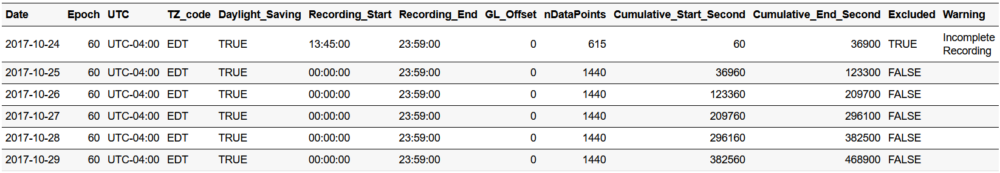

Time-Shift
Pre-process Data Affected by Daylight Saving and Travel-induced Time Shift
C. William Yao
Source:vignettes/Time-Shift.Rmd
Time-Shift.RmdWhat will be covered in this tutorial?
This specific tutorial is designed specifically to show users how to use ActiGlobe to preprocess longitudinal actigrpahy recordings affected by time shift. For analysis and generation of graphic/excel report of daily actigraphy measures, please go to tutorial title: Graphic-Report.
Load the Libraries
If any of the packages has yet been installed, we can always install them using the function [“install.packages()”].
Load Example Data: FlyEast
| Activity | X2 | Marker |
|---|---|---|
| 11 | 0.00 | 0 |
| 0 | 0.00 | 0 |
| 0 | 0.00 | 0 |
| 0 | 0.00 | 0 |
| 0 | 0.00 | 0 |
| 0 | 0.00 | 0 |
For more information, type ?FlyEast or
help(FlyEast) in your R console.
< Tip for Beginner to R> 1. Type: View(FlyEast) in the R
console will allow users to review the data structure of FlyEast. 2. Use
Tab button to help finish the code. Try typing: “Fly” in the
Console (i.e., the window where we can see a >), then
press the button Tab on the keyboard.
Step 0. Create a brief summary of the recordings
In general, when pre-processing or harmonizing large volumes of data, it’s good practice to first generate a structured summary of the dataset.
Here, we use BriefSum() to generate an initial summary
of the actigraphy data recorded in FlyEast. Based on the initial
recording time, it runs through the raw recording file to provide a
quick overview with simple summaries for each recording day and a newly
enriched actigraphy data. This pre-processing step also automatically
adds timestamps to the original longitudinal recording. If the original
location inherits the practice of daylight-saving transitioning,
BriefSum() would also automatically handle any gain or loss
in time. By default, BriefSum() would allow us to store
both the summary and the newly enriched recording data in a
data.list.
BdfList <-
BriefSum(
df = FlyEast,
SR = 1 / 60,
Start = "2017-10-24 13:45:00",
TZ = "America/New_York"
)
str(BdfList, max.level = 1) ### An overview of the output structure from BriefSum()
#> List of 2
#> $ Bdf:Classes 'ActiGlobe' and 'data.frame': 35 obs. of 13 variables:
#> $ df :Classes 'ActiGlobe' and 'data.frame': 48847 obs. of 9 variables:We can also take the advantage of zeallot to store
multiple outputs at once just like in Matlab and
Python.
c(Bdf, df) %<-%
BriefSum(
df = FlyEast,
SR = 1 / 60,
Start = "2017-10-24 13:45:00",
TZ = "America/New_York"
)In the brief summary of daily recording, we would have thirteen parameters, including the information on the beginning and the end of each daily recording period, labels warning the total time of a recording is less than 24 hours and the presence of daylight-saving time (based on the initial time zone).
Bdf <- BdfList$Bdf
head(Bdf)Table 2 The Header of Bdf 
In the enriched data - df, we have both the original
data stored in FlyEast and some new information, such as
the time stamp of each data point.
df <- BdfList$df
head(df) ### This should give us the same first few lines of FlyEast dataset with a few new columns created by [BrifSum()].| Activity | X2 | Marker | DateTime | Date | Time | UTC | DaylightSaving | nPoint |
|---|---|---|---|---|---|---|---|---|
| 11 | 0.00 | 0 | 2017-10-24 13:45:00 | 2017-10-24 | 13:45:00 | UTC-04:00 | TRUE | 1 |
| 0 | 0.00 | 0 | 2017-10-24 13:46:00 | 2017-10-24 | 13:46:00 | UTC-04:00 | TRUE | 2 |
| 0 | 0.00 | 0 | 2017-10-24 13:47:00 | 2017-10-24 | 13:47:00 | UTC-04:00 | TRUE | 3 |
| 0 | 0.00 | 0 | 2017-10-24 13:48:00 | 2017-10-24 | 13:48:00 | UTC-04:00 | TRUE | 4 |
| 0 | 0.00 | 0 | 2017-10-24 13:49:00 | 2017-10-24 | 13:49:00 | UTC-04:00 | TRUE | 5 |
| 0 | 0.00 | 0 | 2017-10-24 13:50:00 | 2017-10-24 | 13:50:00 | UTC-04:00 | TRUE | 6 |
For longitudinal recordings that did not involve long-distance
travel, we may simply stop here and proceed to estimate cosinor
parameters for further analysis. But given that ActiGlobe
was designed specifically to harmonize and correct recordings affected
by time zone changes. We have to take a few more steps to clean up the
data.
Step 1: Look into a travel diary
While users born after 2YK may not be familiar with the concept of a
travel diary, it was relatively popular among young travellers to
document their journeys while travelling. These physical notebooks
generally come with item-wise spaces to jot down our trip itinerary,
including date, time and destination. This information is crucial for
properly sorting the recordings by day and for correcting the previously
created timestamps by BriefSum to match the
destination.
Fortunately, we already created something similar for this tutorial -
TLog. The TLog was created using the standard travel diary
template, which can be created using the function
TravelLog(). For more information on the standard travel
diary, type ?TravelLog or help(TravelLog) in
the R console.
| ID | UTC_Offset | Country_with_Daylight_Saving | date_Start | date_End |
|---|---|---|---|---|
| Jane Doe | UTC -04:00 | TRUE | 10/24/2017 | NA |
| Jane Doe | UTC +08:00 | FALSE | 11/2/2017 | NA |
| Jane Doe | UTC +09:00 | FALSE | 11/13/2017 | NA |
| Jane Doe | UTC -04:00 | TRUE | 11/20/2017 | NA |
This simplified travel diary is essential for pre-processing
actigraphy data using ActiGlobe. The diary contains five
columns to help document the itinerary for each trip that the wearer
took. By default, the first row should contain the information about the
original location when the recording started. Here, one may notice our
intentional design of the template to record the UTC offset by default,
rather than the actual geological location. This strategy aims to reduce
the level of intrusiveness that participants may feel when asked to
provide details of their trip. Since daylight saving is not always a
shared practice for all geological locations within the same time zone
or even the same country, it is important to add this information
because it can affect up to one hour in difference when correcting for
time stamps.
To facilitate the documentation of the travel log, we also include a
copy of the standard Internet Assigned Numbers Authority (IANA)
timetable in ActiGlobe. We can simply use View(IANA) to
pull up the 2025b version of the timetable.
| Country_Name | Country_Code | Timezone_IANA | TimeZone_Identifiers | TZ_Code | Offset | Observes_DST | Current_DST_Status | Current_Abbreviation | Current_Time_Zone_long_name | Current_Offset | Standard_Abbreviation | Standard_Time_Zone_long_name | Standard_Offset | |
|---|---|---|---|---|---|---|---|---|---|---|---|---|---|---|
| 2 | Netherlands | NL | Europe/Amsterdam | Europe/Brussels,CET,Europe/Amsterdam,Europe/Luxembourg,MET | CEST | 2 | Yes | DST Active | CEST | Central European Summer Time | +02:00 | CET | Central European Standard Time | +01:00 |
| 5 | Denmark | DK | Europe/Copenhagen | Europe/Berlin,Arctic/Longyearbyen,Atlantic/Jan_Mayen,Europe/Copenhagen,Europe/Oslo,Europe/Stockholm | CEST | 2 | Yes | DST Active | CEST | Central European Summer Time | +02:00 | CET | Central European Standard Time | +01:00 |
| 6 | Switzerland | CH | Europe/Zurich | Europe/Zurich,Europe/Busingen,Europe/Vaduz | CEST | 2 | Yes | DST Active | CEST | Central European Summer Time | +02:00 | CET | Central European Standard Time | +01:00 |
| 16 | Canada | CA | America/Vancouver | America/Vancouver,Canada/Pacific | PDT | -7 | Yes | DST Active | PDT | Pacific Daylight Time | -07:00 | PST | Pacific Standard Time | -08:00 |
| 21 | United States | US | America/Chicago | America/Chicago,CST6CDT,US/Central | CDT | -5 | Yes | DST Active | CDT | Central Daylight Time | -05:00 | CST | Central Standard Time | -06:00 |
| 22 | United States | US | America/Los_Angeles | America/Los_Angeles,PST8PDT,US/Pacific | PDT | -7 | Yes | DST Active | PDT | Pacific Daylight Time | -07:00 | PST | Pacific Standard Time | -08:00 |
Step 2: Adjust time change based on the travel diary
Before ActiGlobe directly modify information stored in
the enriched longitudinal recording - df, we will need to
adjust the brief summary stored in Bdf. This design allows
us to quickly scan through the summary file, just in case any adjustment
is not properly addressed.
Bdf.adj <- TAdjust(Bdf, TLog)When we put it side-by-side with the initial brief summary, we can see clear changes across the various documents regarding the recordings and their annotations.
knitr::kable(Bdf[10:15, ]) ### Only display 6 days
Table 6 Initial Brief Summary of the Recording

knitr::kable(Bdf.adj[10:15, ]) ### Only display 6 days
Table 7. Adjusted Brief Summary of the Recording

When we compare the overview of the longitudinal recording, we can also see clear changes in the various documentations about the recordings and their annotations
ggActiGlobe(
df = df,
Bdf = Bdf,
VAct = "Activity",
VDT = "DateTime"
)
### Reconstruct the longitudinal recording with proper segmentation
dfList <- Act2Daily(
df = df,
Bdf = Bdf.adj,
VAct = "Activity",
VTm = "Time",
Incomplete = TRUE,
Travel = TRUE
)
df2 <- do.call(rbind, dfList$Daily_df)
ggActiGlobe(
df = df2,
Bdf = Bdf.adj,
VAct = "Activity",
VDT = "DateTime"
)
We can also use the following code to look at each daily recording separately. Note that the code below was intentionally left without generating any output plot to avoid overcrowding this tutorial.
- Unadjusted Original Recording
for (i in seq_along(length(x))) {
x <- Bdf$Cumulative_Start_Second
y <- Bdf$Cumulative_End_Second
GX <- df$Activity[(x[i]:y[i]) / 60]
print(plot(GX, main = i, font.lab = 2, ylab = "Activity (counts)"))
}- Time-shift Adjusted Recording
for (i in seq_alonglength(x))) {
x <- Bdf.adj$Cumulative_Start_Second
y <- Bdf.adj$Cumulative_End_Second
GX <- df$Activity[(x[i]:y[i]) / 60]
print(plot(GX, main = i, font.lab = 2, ylab = "Activity (counts)"))
}- Time-shift Adjusted Recording
for (i in names(dfList$Daily_df)) {
plot(dfList$Daily_df[[i]]$Activity, main = i, font.lab = 2, ylab = "Activity (counts)")
}Refer to the ‘Graphic-Report’ tutorial for instructions on how to segment and export recordings by day, as well as how to generate a graphic report.